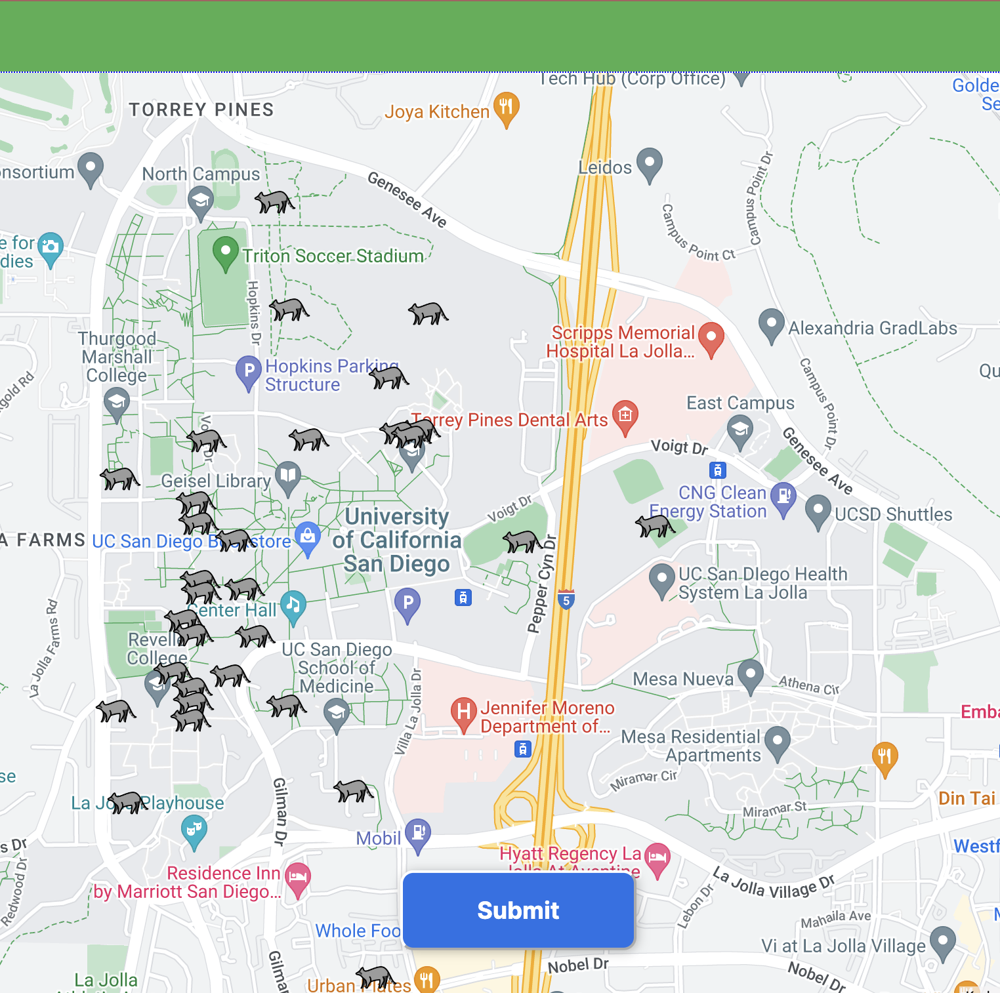

A small web app for crowd-sourcing reports of UC San Diego's most prolific nocturnal residents — pinned to a live campus map.
What it does
Students drop pins where they spot a raccoon, optionally attaching a photo and a short note. The pins are stored in Firebase Cloud Firestore and rendered onto a Google Maps overlay, with old sightings fading out so the map reflects recent activity rather than every raccoon ever seen on campus.

Why it exists
Honestly, because it was funny. But it turned out to be a useful exercise in building a tiny app end-to-end: auth, real-time database writes, map rendering, and a deploy pipeline, all from scratch in a weekend.
Built at UC San Diego.